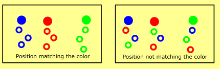

チュートリアル: 継承
中級 アーティスト プログラマー
このチュートリアルでは、他のパーティクルから位置や色などの属性を 継承（inheritance） したパーティクルを作成する方法を説明します。
サンプル
これからテクニックを紹介していくに当たって、新しい Sample.Particles プロジェクトを作成し、ChildParticles シーンを開いてください。

継承元
継承を、親と子のパーティクルで考えてみると分かりやすいでしょう。
例えば、Sample.Particles プロジェクトの ChildParticles シーンで、Fireworks エンティティを確認してみましょう。
2 つのエミッターが含まれています。パーティクルは親エミッターを名前で参照するので、最初のエミッターには Emitter Name プロパティが設定されています。名前は任意ですが、他のエミッターがこのエミッターのパーティクルを参照できるようにするためには必須です。
2 つ目のエミッターでは、新しいイニシャライザー Position from parent を作成します。これにより、最初のエミッターのパーティクルを参照し、その位置を使って子パーティクルを初期化することができます。Parent emitter 属性には、最初のエミッターの名前（Parent）を記載します。この結果、生成されたそれぞれの子パーティクルに対して親パーティクルがランダムに割り当てられ、その位置が子パーティクルにコピーされます。
Parent Offset シードは、複数の属性を継承する場合に、フィールドにマッチします。例えば、（ランダムに選ばれた）同一の親パーティクルから Position と Color の両方を継承したい場合には、Parent Offset シードを同じ値に設定しておく必要があります。また、両方のイニシャライザーの Parent Offset シードを異なる値にすることもできます。この場合、ある親パーティクルの位置から生成された子パーティクルで、別のランダムな親パーティクルから色を継承することができます。通常は同じにしておきたいところですが、場合によっては混ぜた方がいいかもしれません。

ご覧のように、この種の継承では生成数や最大パーティクル数などのパラメータを制御できず、非常にランダムになります。ほとんどのエフェクトはこれで十分ですが、パーティクルをもっと直接コントロールしたい場合もあります。
コントロールされた継承（Controlled inheritance）
特定の親パーティクルから一定数のパーティクルを産み出すとき、それらのパーティクルは産み出した親パーティクルの属性だけを継承するようにしたい場合があります。
これを行うには、子エミッターのスポナーとして From parent タイプを選択します。そして、親エミッターの名前を Parent emitter 欄に記入します。
Spawn Control Group フィールドは、パーティクルがコントロール情報を保存する方法を決定します。スポーン情報を取得するためには、後ですべてのイニシャライザーに同じコントロールグループを割り当てる必要があります。
コントロールグループは 4 つまで設定できます。異なる条件でパーティクルを生成する場合や、同じ親から 2 つ以上の異なる子パーティクルを生成する場合は、それらが混ざらないように、異なるコントロールグループを割り当ててください。
Particle Spawn Trigger フィールドは、親側のトリガー条件であり、パーティクルを生み出すかどうかの条件を指定します。None のままだとパーティクルが生成されないので、On Hit または Lifetime を指定します。
On hit は、コライダーが割り当てられた親パーティクルに対して機能し、サーフェスに当たるたびにトリガーされます。
Lifetime は親パーティクルの相対的なライフタイムに基づいており、ライフタイムが制限内であれば、フレームごとにトリガーされます。2 つのスライダーがあり、どのポイントからどのポイントまでパーティクルを生み出すかをコントロールできます。また、それらを逆にすることで、生成条件を逆にすることもできます。例えば、ライフタイムの条件が (0.9 - 1.0) のパーティクルは、ライフタイムの最後の 10 % でのみ子パーティクルを生成します。
最後に、Particles/trigger フィールドは、条件が満たされるたびにいくつのパーティクルが生成されるかを指定します。
子エミッターの場合、エミッターが放てるパーティクルの最大数をコントロールするのは良い方法です。特に、コリジョンヒットなどの非決定論的なケースで有効です。
決定論（Determinism）
イニシャライザーでは、スポナーのコントロールグループに対応する Spawn Control Group 値を選択します。これにより、イニシャライザーはトリガーによって生成されたパーティクルのみを強制的に動作させ、その他のパーティクルはスキップさせることができます（複数のスポナーが割り当てられている場合）。
リボンと軌跡
リボンと軌跡の描画は、パーティクルの生成順序に依存しているため、最初のうちは設定が少し難しいです。親パーティクルの場合は、親パーティクルの生成順序にも依存するようになります。
親パーティクルに Spawn Order タイプのイニシャライザーを追加します。これは、子パーティクルで使用されます。
子エミッターでは、すべてのスポナーを削除し、[From parent] タイプのスポナーを 1 つだけ追加します。子パーティクルの生成をコントロールして、すべての子パーティクルが親パーティクルの後ろのリボンに適切にグループ化されるようにします。システムにランダムな動作を追加する別のスポナーを追加すると、リボンが間違った方法で接続されてしまいます。トリガー条件は Lifetime に設定します。
再び子エミッター側に戻り、Order from parent タイプのイニシャライザーを追加します。これは、パーティクルに生成順序を割り当てるだけでなく、親によって子をグループ化します。この順序を使用するように Sort を設定し、リボンのシェイプビルダーを割り当てると、各軌跡がそれを生成した親パーティクルの後ろに適切にグループ化されているのがわかるでしょう。
円運動（Circular behavior）
パーティクルのエミッターは、互いに輪状に属性を継承したり、同じエミッターのパーティクルから属性を継承したりすることがあります。これにより、ランダムな効果や「揺れ」のある効果が現れ、興味深いものとなります。
Colliding Particles パーティクル エンティティ（Sample: Particles プロジェクトの MainScene 内にあります）では、パーティクルは衝突時に生成されますが、親エミッターは同じです。つまり、パーティクルがサーフェスに衝突するたびに、同じ種類のパーティクルが増えるということです。これを実現するには、2 つの重要な要素があります。
まず、2 つのスパナーを使います。1 つは 1 秒間に数個のパーティクルを生成し、これがシステムを構成する初期要素となります。もう 1 つのスポナーでは、衝突時により多くのパーティクルを生成し、コントロールグループを使用します。
次に、2 つの Position タイプのイニシャライザーを使います。最初のものは、パーティクルを出現させたい位置を割り当てます。これはすべてのパーティクル（親から生成されたものも含む）に適用されるので、このままにしておくと、パーティクルがサーフェスに衝突するたびに、初期位置からさらなるパーティクルが発射されます。
2 つ目のイニシャライザーは Position from parent タイプで、パーティクルの位置を On hit スポナーと同じコントロールグループを使って初期化します。Position from parent はパーティクルの位置をコントロールグループにより上書きし、Per second タイプのスポナーから生成されたパーティクルはそのままにしておきます。これにより、1 つの射出点から常に少数のパーティクルが発生し、サーフェスに当たるたびに雪崩のように増殖していきます。